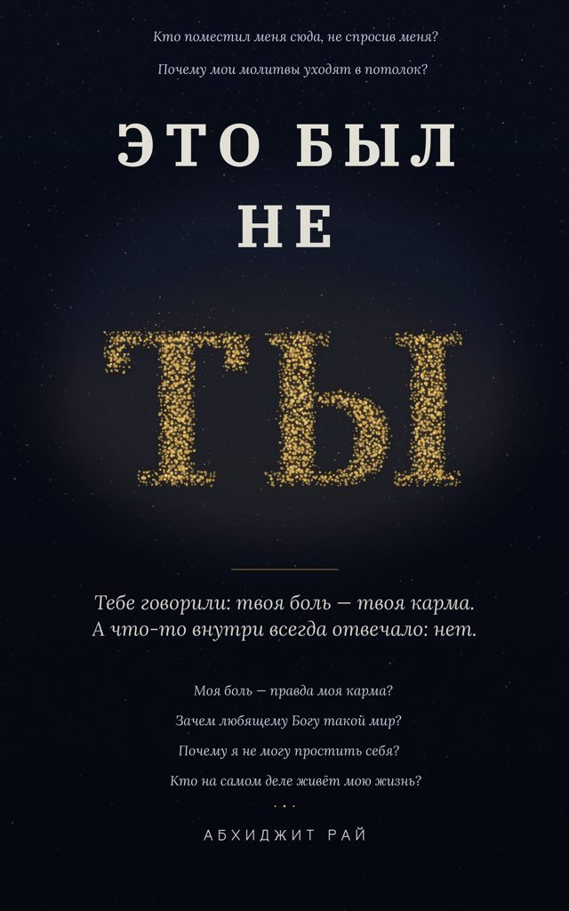
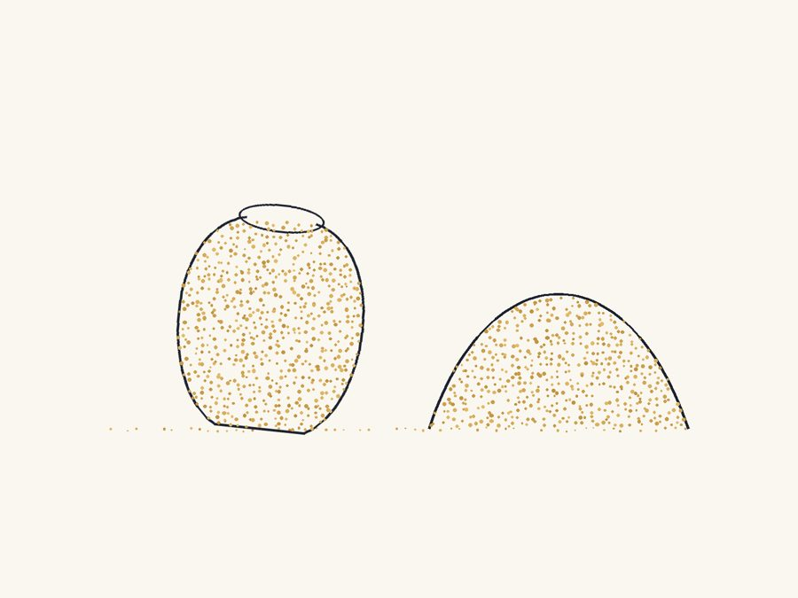
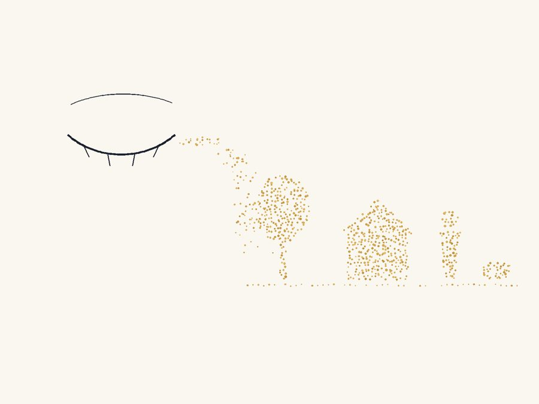
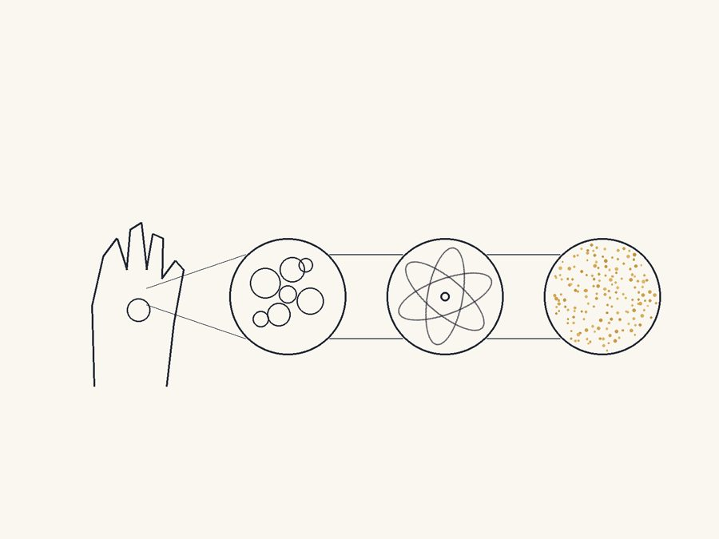
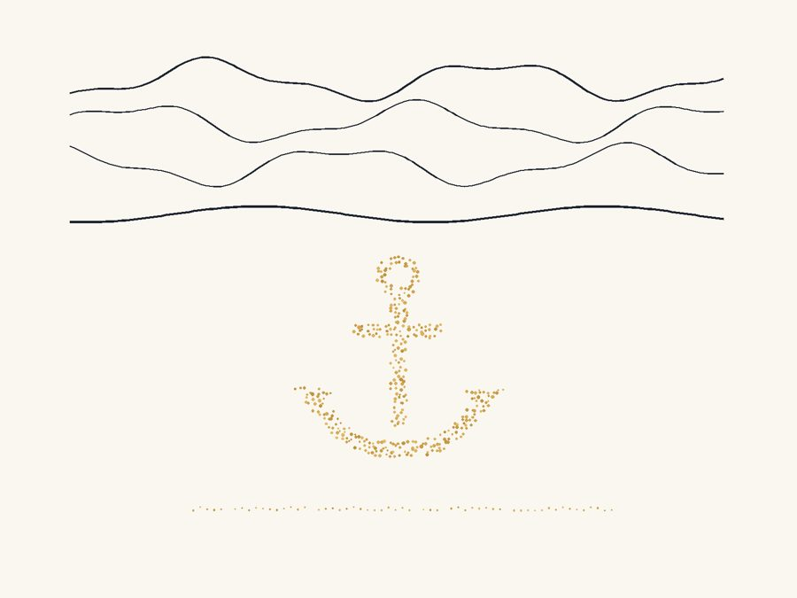

Кто поместил меня сюда, не спросив меня?
Почему мои молитвы уходят в потолок?
Это был не ты
Свобода от вины, кармы и Бога, которого тебя научили бояться — для всех, кто молился и не чувствовал ничего.

Тебе говорили: твоя боль — это твоя карма.
А что-то внутри всегда отвечало: нет.
Это про тебя?Будь честен. Чувствовал ли ты это?
Ты молился всем сердцем… и чувствовал, что говоришь с потолком.
Тебе сказали, что твоё страдание — это твоя карма, твоя вина, — и что-то глубоко внутри отказалось это принять. А потом ты почувствовал вину за отказ.
Ты смотришь на этот мир — животных, съедаемых заживо, раздавленных добрых людей — и не можешь поверить, что его создал любящий Бог. Но и поверить, что всё это просто так, тоже не можешь.
Ты несёшь вину за ошибки многолетней давности. Ты наказал себя тысячу раз, а вина так и не уходит.
Ты пробовал гуру, группы, приложения для медитации, правила и ритуалы… а тихий голос внутри повторял: это не то.
Если, читая эти строки, что-то шевельнулось у тебя в груди — эта книга написана для тебя. Не для всех. Для тебя.
Что это за книгаЧестный ответ — не утешительный.
Я не гуру. Нет ашрама, нет белых одежд, нет пяти утренних привычек на продажу. Я человек из Дели, который устал от всех готовых ответов — и пошёл искать с единственным инструментом, который никто не одобрял: честными вопросами.
«Это был не ты» берёт самое тяжёлое, что ты несёшь — вину, страх перед Богом, чувство, что ты не справляешься с жизнью и с духовностью, — и смотрит на это так честно, что оно не переживёт этого взгляда. Она начинается с вопросов, которые тебе запрещали задавать:
Кто поместил меня в эту жизнь, не спросив меня?
Зачем Богу создавать такой мир?
Если мои молитвы уходят к тому, кто создал мои проблемы… что я делаю?
А затем, шаг за шагом — простой логикой, небольшой наукой, без слепой веры — она ведёт тебя к ответу, который меняет то, как ты видишь своё прошлое, свои молитвы, свои ошибки и свою смерть. К последней странице тихо умирает один вопрос: «Что со мной не так?» Потому что ответ: ничего.
Что внутри
- Почему «кто поместил меня сюда?» — не грех, а самый честный вопрос в твоей жизни
- Система молитвы под честным взглядом: почему за окошком жалоб сидит тот, кто создал проблему
- Теория кармы на суде — и почему виноватого никогда не было
- Тест в три часа ночи, который доказывает: ты никогда не управлял даже собственными мыслями
- Горшок, который молился гончару — открытие, ломающее всю систему
- Почему этот мир — не машина, которую Бог бросил… а нечто куда более странное и куда более близкое
- Самый трудный вопрос — зачем Богу видеть во сне мир, полный боли? — без единой утешительной лжи
- Что на самом деле случилось с Буддой, Кришной и Иисусом в конце — и о чём духовный рынок молчит
- Признание автора: иногда он всё ещё хочет поспорить с Богом — и почему это часть ответа
- Сдвиг «приблизить / отдалить», который помогает пережить штормы, не цепенея
Из книги
Бог дал тебе голод… и заставил молиться себе о еде.
Ты двадцать лет судил призрака. Наказывал призрака. Просыпался в три часа ночи, чтобы хлестать призрака.
В театре нет зала суда.
Ты никогда не видел мёртвого. Ты видел лишь места, где сон замер очень тихо.
На страницахПятнадцать рисунков ручной работы — по одной мысли в каждом.




Чем эта книга не является
Не религиозная книга. Ни одна религия не атакуется и не продаётся.
Не позитивное мышление. Она не велит тебе улыбаться, визуализировать или быть благодарным.
Не книга гуру. Ноль правил. Ни одного последователя не требуется.
Не сложная книга. Простой, прямой язык — её спокойно дочитывают и те, для кого язык неродной.
И не уютная книга. Некоторые страницы тебя потрясут. Всё равно читай медленно. Он писал медленно.
Вопросы, на которые отвечает книга
Моё страдание — правда моя карма?
Нет. Карма-как-вина требует свободного отдельного делателя, выбравшего зло. Присмотрись — и его не найти: мысли, желания и поступки возникают из причин, которые ты не выбирал. Последствия реальны; вина — иллюзия. Твоё страдание никогда не было приговором тебе.
Существует ли свобода воли?
Поищи «выбирающего» в собственном опыте. Ты найдёшь страхи и желания, которые улаживаются сами, и голос, что задним числом присваивает заслугу. Когда делатель растворяется, растворяется и вина на нём.
Что значит «всё есть Бог»?
Наука находит одну вибрирующую энергию под всей материей; святые называют эту реальность Богом. Не «Бог создал мир», а «всё есть Бог» — одно существо, проявляющееся как многое. Через честные вопросы, не через слепую веру.
Это против моей религии?
Она не нападает ни на одну религию. Она ставит под вопрос одну картину Бога — отдельного царя, ведущего счёт, — и предлагает другой взгляд, укоренённый в древнейших идеях Индии. Многие верующие читатели говорят, что их вера стала глубже.
Мой английский слабый. Смогу ли я прочитать?
Да. Есть полное русское издание — «Это был не ты», — переведённое с тем же живым, честным голосом. И английский оригинал намеренно написан простыми короткими предложениями.
Есть ли правила, ритуалы, задания?
Нет. Каждая глава заканчивается одним вопросом, с которым стоит побыть. Это всё.
От читателей
Тогда сделай одну тихую вещь для следующего, кто ещё несёт эту тяжесть: оставь честную строчку там, где ты купил книгу, или передай её тому, кому она нужна. Одного предложения достаточно. Прямо сейчас кто-то в точно такой же боли ищет — и именно твои слова помогут ему найти её.
Оставь отзыв там, где купил
Или поделись с тем, кому это нужно
Получить книгуЭлектронная и бумажная · русский и английский
Это был не ты. Узнай, кто это был.
Напиши мнеЭто я, сижу рядом с тобой.
Если книга задела что-то в тебе или ты просто хочешь поговорить об этих вопросах — напиши. Я читаю всё.